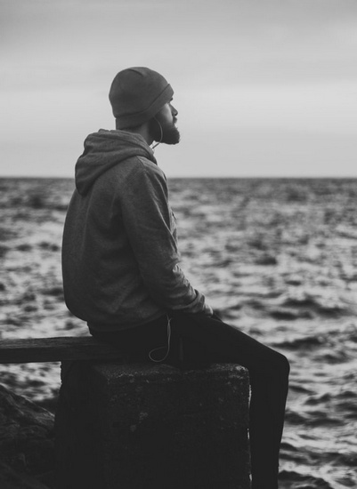

Егор Новожилов
ОДИНОЧЕСТВО НА НЕОБИТАЕМОМ ОСТРОВЕ

Как-то сидел одинокий панк на необитаемом остраве. Под пальмой. Кокосы падали с пальмы прямо ему на голову. Он то и дело озирался: кто здесь? Упадёт на голову кокос, набьёт шишку, а он головой крутит и вопрошает: кто здесь?
Мимо прошёл задумчивый слон. И он был очень спокойный. Вы когда-нибудь видели как слоны нервничают? Конечно же никогда не видели! Потому что и не бывает такого. Слоны очень спокойны всегда.
Панк этот нервничал, потому что неподалёку от него расположилось племя пигмеев. Эти пигмеи варили людей живьём в огромных котлах, а потом разбирали их по косточкам и выкладывали огромные мозайки на стенах своих жилищ из обглоданных человеческих костей.
Но они воротили нос, потому что от панка жутко воняло. Поэтому они его не трогали и даже не подходили близко.
Мимо проползла черепаха. Ползла медленно, оборачивалась и пугалась. То и дело то сунет голову в панцирь, то аккуратно всунет. Мимо так проползла, да скрылась за поворотом.
Думал он как обычно о вечном. Всё лежал и раздумывал. А на голову сваливались кокосы. Бывало, померещится женщина, так он эту мысль сразу поганой метлой из себя изгоняет. А всё потому что сдержанный он был очень. Осторожный в мыслях и желаниях.
Пигмеи поодаль кричали и вообще непотребно себя вели. Кипятили нового пассажира. Это был старый моряк, потерпевший караблекрушение. Выброшенный на берег морем и найденный кровожадными голодными пигмеями. Сегодня на ужин: костяная нога, а на десерт - усищи.
Мимо прошёл ещё раз слон. И всё так же спокойно и невозмутимо. Что скажешь.. слоны они такие!...
Рассказ написан в ночь на 14 июня 2025 года в Колпино